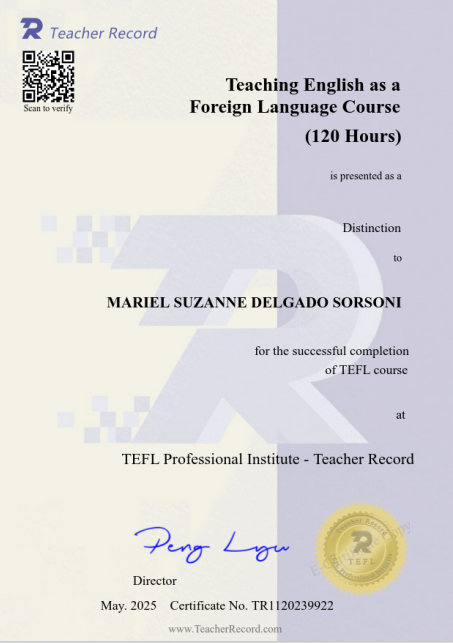

VA Bar Training Completion Certificate
Virtual Assistant training and specialization.
A selection of my professional training, certifications, and education credentials that support my work in virtual assistance, communication, administration, and online teaching.
Virtual Assistant training and specialization.

Professional communication training.

Additional professional training credential.

Additional certification and training.

Bachelor of Science in Business Management, Major in Office Administration — Ateneo de Zamboanga University, completed 2019.